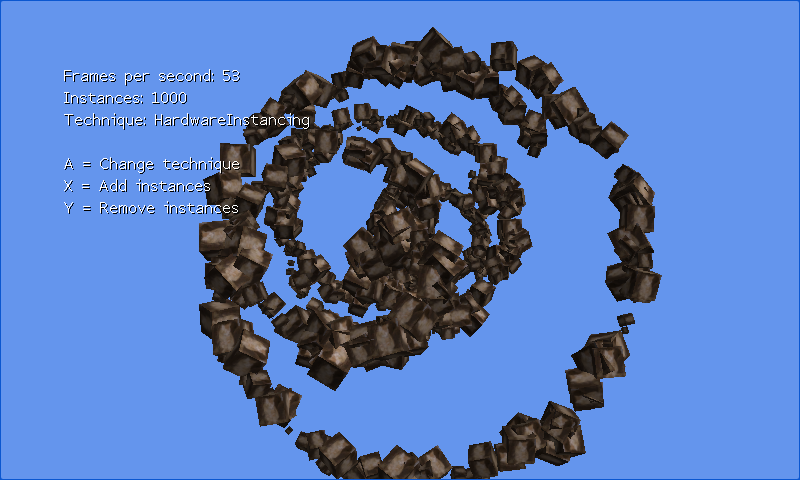

Instanced Model
Ported from Microsoft's XNA 4.0 Instanced Model sample.
Source for this sample on GitHub ↗

Play ▸Opens in a new tab. Change rendering techniques and instance count to compare them.
About this sample
Drawing many copies of a model can spend more CPU time on repeated draw calls than on the geometry itself. This sample compares a straightforward loop, a loop that avoids repeated state changes, and hardware instancing that submits the copies in one draw. Each model follows its own animated spiral while the overlay reports the current technique, instance count and frame rate.
Controls
| Action | Keyboard | Gamepad |
|---|---|---|
| Change technique | A | A |
| Add instances | X | X |
| Remove instances | Y | Y |
| Exit | Escape | Back |